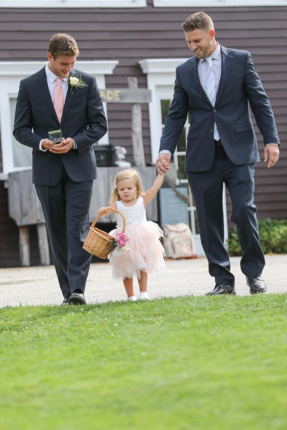
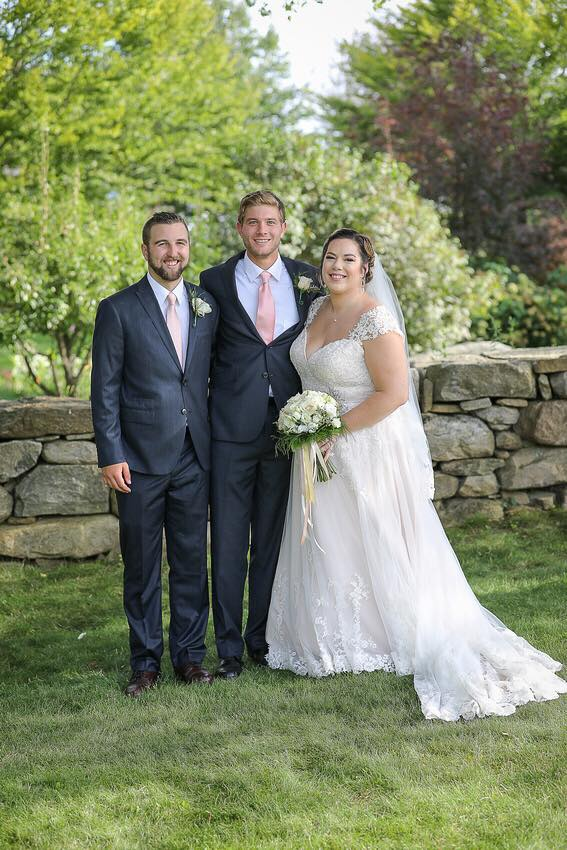

The inspiration for me to become a ring bearer started when I was 20 years old. I have never witnessed an older ring bearer at any wedding I have attended and I always wondered why... I have come to the conclusion that there is no reason for the lack of 20 year old ring bearers, and thus, I proposed the idea to my two great friends Anthony and Julie (as lovely seen in the photos) that I would make a great ring-Bearer. They happened to be in the market as an engaged couple, and decided to risk their luck on me as a ring bearer... Needless to say, it was the best wedding I have ever been apart of.
|  |  |
|---|